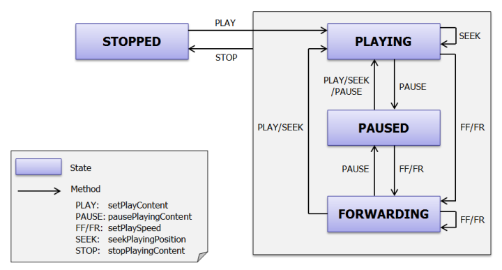
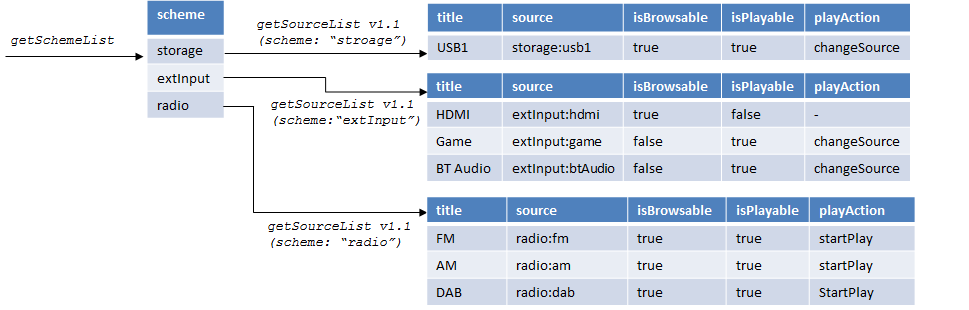
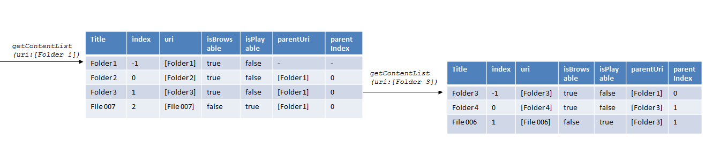
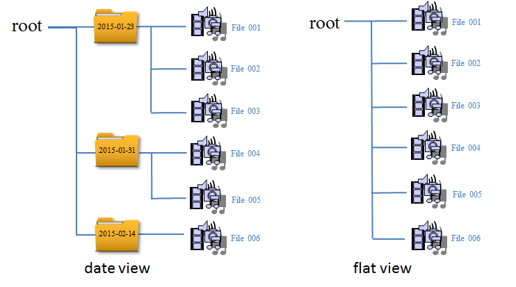

Service avContent ¶
This service handles overall control of input and output of the device for AV
contents and manipulating AV Contents itself on the device. For example,
there are APIs to get TV's channel list, request to set to a channel and also
request to change to external input like HDMI input. Several APIs have URI
parameters to specify input and output of the device or contents itself.
Please find more detail about the concept of URI here.
- API List
-
API Group API name Auth Level Description Other deleteContent (v1.0) GenericThis API provides a function to delete content.Other getContentCount (v1.0) PrivateThis API provides the count of contents under the source.Other getContentCount (v1.1) PrivateThis API provides the count of contents under the source.Other getContentList (v1.0) PrivateThis API provides the list of contents under the scheme and source.Other getContentList (v1.2) PrivateThis API provides the list of contents under the scheme and source.Other getCurrentExternalInputsStatus (v1.0) NoneThis API provides information of current status of all external input sources of device.Other getParentalRatingSettings (v1.0) GenericThis API provides a function to get the current parental rating settings of the device.Other getPlayingContentInfo (v1.0) PrivateThis API provides information of current playing content or current input selected.Other getSchemeList (v1.0) NoneThis API provides the list of schemes that device can handle.Other getSourceList (v1.0) NoneThis API provides the list of sources under the scheme.Other setDeleteProtection (v1.0) GenericThis API provides a function to protect content against deletion operation.Other setFavoriteContentList (v1.0) GenericThis API provides function to set favorite content list.Other setPlayContent (v1.0) GenericThis API provides a function to play content.Other setPlayTvContent (v1.0) GenericThis API provides a function to change "tv" URI resources (broadcast channels) in consecutive order.Other setTvContentVisibility (v1.0) GenericThis API provides function to set visible/invisible settings for channel list. - Common parameters in avContent service
-
- Playing status
- This service has several APIs to change playback status of device,
for example, requesting device to play back, stop contents and so on.
Following chart describes state chart related to these APIs.
"PLAYING" Content is being played"STOPPED" Content is stopped"PAUSED" Content is pausing"FORWARDING" Content is being forwarded.
- Getting content information
- For getting information of content that a device has, a client needs
to know source of URI. A client can get URI of source by using
getSchemeList and getSourceList.
At first, a client gets scheme information by getSchemeList. After that, a client sets this scheme to "scheme" parameter of getSourceList and calls this API to get URI of source.
A client sets this URI of source to "uri" parameter of getContentList and calls this API to get content information or browse content.
If the value of "isBrowsable" paremeter of getSourceList(v1.1) is true, a content is directory structure and a device browses a content by getContentList and responses information of contents in directory.
If the value of "isBrowsable" parameter of getSourceList(v1.1) is false, a device responses the information of its content.
Moreover, a client can sets URI of source to "uri" parameter of setPlayContent if the value of "isPlayable" parameter of getSourceList(v1.1) is true.
When calling setPlayContent, a device executes an action indicated by "playAction" parameter of getSourceList(v1.1).
The value of playAction parameter in getSourceList

"startPlay" A device starts playback."changeSource" A device changes the internal state in advance to play back or browse a content such as CD, USB, Radio, HDMI input etc.
- Browsing a directory
- When the value of "isBrowsable" in getSourceList(v1.1) or
getContentList is "true", by setting URI of the source/content to
"uri" of request parameter of getContentList, the content list in
specified directory can be acquired.
Following figure shows an example of directory structure. When URI of Folder 1 is set in request parameter of getContentList, items of Folder 2, Folder 3 and File 007 are set in an object-array of result data. Moreover, item of Folder 1 is also possible to be set in an object-array of response result data as index number -1.
Next, when URI of Folder 3 is set in request parameter, items of Folder 3 (identified by the value of index -1), Folder 4, and File 006 are set in an object-array of result data.
Even if a client knows only URI of Folder 3 (a client doesn't know URI of Folder 1), a client can know URI of parent folder (Folder 1) by "parentUri" of Folder 3 (identified by the value of index -1) and get information of parent folder by using "parentUri" and "parentIndex" of Folder 3 (identified by the value of index -1).
Meaning of "totalCount" in getContentList and "count" in getContentCount is as follows "totalCount" means the number of playable contents (excluding directories). whereas "count" means the number of all contents (including directories) just under the specified directory when "" is set in target parameter.
For example, when setPlayContent is executed by specifying URI of Folder 1, File 001 ~ File 007 is played back. And "totalCount" becomes 7. And when setPlayContent is executed by specifying URI of Folder 3, File 004 ~ File 006 is played back. And "totalCount" becomes 3.
When getContentCount is executed by specifying URI of Folder 1, "count" becomes 3 (Folder 2, Folder 3, and File 007). When getContentCount is executed by specifying URI of Folder 3, "count" becomes 2 (Folder 4 and File 006).
And when "all" is set in target in request parameters of getContentCount, "count" is set the number of all content which includes contents in sub-directly but does not include the directory itself. For example, when getContentCount is executed by specifying URI of Folder 1 and target is "all", "count" becomes 7. When getContentCount is executed by specifying URI of Folder 3 and target is "all", "count" becomes 3. Note that both "count" and "totalCount" are affected by "search" paramter in request.


- View type
- When getting content information by getContentCount or
getContentList, the layer structure of content is changed by
specifying "view" of request parameter.
The value of "count" in getContentCount means the number of all contents (including directories) just under the specified directory when "" is set to target parameter. So, if uri of root is set, the number of date folders is set to "count" in case of date view. And the number of all contents is set to "count" in case of flat view.
When "all" is set to target parameter, "count" is set the number of all content which includes contents in sub-directly but does not include the directory.

"date" Each content is stored to a folder every date."flat" All contents are stored in root without a folder.
- Output
- URI of output. If this is skipped or "" is set, it means all outputs. Refer to here to know URI structure in detail.
- BD Playback Layer
- Set the readout layer of Hybrid Disc (BD/DVD , BD/CD).
"bd" Play back BD layer."dvdCd" In case of BD/DVD hybrid disc, play back DVD layer. In case of BD/CD hybrid disc, play back CD layer.
- BD Internet Connection
- Set whether to allow Internet connection from BD contents during BDMV
disc playback.
"allow" Allow Internet connection."notAllow" Prohibit Internet connection.
- BD Data Storage Device
- A Function to select Internal Memory or USB terminal (USB front/USB
back) for BD data usage Model with multiple BD data storage spaces
only.
"internalMemory" BD data stores to Internal Memory."usb1" BD data stores to USB1 terminal."usb2" BD data stores to USB2 terminal.
- Menu Language
- Menu language settings for BD-ROM or DVD-VIDEO. Language code is
represented by ISO-639 alpha-3 or a four-digit number defined in
device.
- (ex) "eng"
- (ex) "jpn"
- (ex) "1027"
- Audio Language
- Audio language settings for BD-ROM or DVD-VIDEO. Language code or
"original" can be set. Language code is represented by ISO-639
alpha-3 or a four-digit number defined in device. "original" means
the default language set in the disc.
- (ex) "eng"
- (ex) "jpn"
- (ex) "1027"
- Subtitle Language
- Subtitle language settings for BD-ROM or DVD-VIDEO. Language code is
represented by ISO-639 alpha-3 or a four-digit number defined in
device.
- (ex) "eng"
- (ex) "jpn"
- (ex) "1027"
- Closed Caption Appearance Mode
- Set the appearance mode of Closed Caption.
"original" Default settings defined in contents."large" Large caption defined in device."small" Small caption defined in device."custom" Custom settings set by other target in this API.
- Closed Caption Character Size
- Set character size of Closed Caption.
"small" Character size is small."standard" Character size is standard."large" Character size is large."original" Default settings defined in contents.
- Closed Caption Character Style
- Character style. The relations with the font style to be displayed
and style number depends on device.
"style1" Monospaced with serifs (similar to Courier)."style2" Proportionally spaced with serifs (similar to Times New Roman)."style3" Monospaced without serifs (similar to Helvetica Monospaced)."style4" Proportionally spaced without serifs (similar to Arial and Swiss)."style5" Casual font type (similar to Dom and Impress)."style6" Cursive font type (similar to Coronet and Marigold)."style7" Small capitals (similar to Engravers Gothic)."original" Default settings defined in contents.
- Closed Caption Character Color
- Character color.
"black" black"white" white"green" green"red" red"blue" blue"magenta" magenta"cyan" cyan"yellow" yellow"original" Default settings defined in contents.
- Closed Caption Character Opacity
- Character opacity. When "Character Color" is set to "Original", this
setting item is disabled.
"solid" solid"translucent" translucent
- Closed Caption Edge Type
- Edge type
"original" Default settings defined in contents."none" no edge type displayed in preview area"raised" raised edge"depressed" depressed edge"outline" outline edge"leftShadow" left shadow edge"rightShadow" right shadow edge
- Closed Caption Edge Color
- Edge color.
"black" black"white" white"green" green"red" red"blue" blue"magenta" magenta"cyan" cyan"yellow" yellow
- Closed Caption Background Color
- Background color.
"none" no color"black" black"white" white"green" green"red" red"blue" blue"magenta" magenta"cyan" cyan"yellow" yellow
- Closed Caption Background Opacity
- Background opacity.
"solid" solid"translucent" translucent
- Closed Caption Window Color
- Window color.
"none" no color"black" black"white" white"green" green"red" red"blue" blue"magenta" magenta"cyan" cyan"yellow" yellow
- Closed Caption Window Opacity
- Window opacity.
"solid" solid"translucent" translucent
- Closed Caption Sample Mode
- The current preview mode of sample Closed Caption.
"on" Show sample Closed Caption."off" Hide sample Closed Caption.
- Set top box Audio Input
- When connecting with set top box using HDMI1 function, select if the
input audio should output from this device via HDMI1 or TV.
"hdmi1" Input audio should output from HDMI1 output terminal."tv" Input audio should output from TV output terminal.
- Screen mirroring Easy Connection
- Setting that enables or disables Anytime Reconnection.
"on" Enable Anytime Reconnection. Registered device can connect and start mirroring on any function change enabled windows other than playing BD/DVD disc."off" Disable Anytime Reconnection. Even for registered device, it can only connect and start mirroring while window for screen mirroring is displayed.
- Screen mirroring RF Band
- A setting used to setup Priority RF channel for Screen mirroring
connection. The setting value will influence both the connection
speed and the playback stability.
"auto" Set the value of RF channel automatically."1" Use CH1 band in priority."6" Use CH6 band in priority."11" Use CH11 band in priority.
- Standby Through
- Set whether HDMI input is passed through when a server is standby.
"auto" HDMI input is passed through when a server is in standby mode. And HDMI input is not passed through when connected device (such as TV) is in standby mode."on" HDMI input is always passed through when a server is in standby mode."off" HDIM input is not passed through when a server is in standby mode.
- Parental Settings Rating Country
- Set the standard area for parental control level by ISO-3166-1
alpha-3 or a four-digit number defined in device.
- (ex) "jpn"
- (ex) "usa"
- (ex) "2174"
- Parental Settings Rating BD Age
- Set the age used to play a BD ROM with Parental Control.
0 Min value.: (step by 1)255 Max value."noRestriction" No Restriction
- Parental Settings Rating DVD Level
- Set the restriction on playing DVD with parental control.
"noRestriction" No Restriction"level1" Parental level 1 is set."level2" Parental level 2 is set."level3" Parental level 3 is set."level4" Parental level 4 is set."level5" Parental level 5 is set."level6" Parental level 6 is set."level7" Parental level 7 is set."level8" Parental level 8 is set.
- Pating setting of TV
- Rating setting of TV.
"y" All children"y7" Directed to older children"g" General audience"pg" Parental Guidance suggested"14" Parents Strongly cautioned"ma" Mature Audience only
- MPAA settings for US
- MPAA setting for US (MPAA: Motion Picture Association of America)
"off" Rating setting is off."g" General audience"pg" Parental Guidance suggested"pg-13" Parents strongly cautioned"r" Restricted"nc-17" No one 17 and under admitted"x" No one 17 and under admitted"nr" Not Rated
- Parental Settings Internet Video Access
- Select whether or not to restrict the usage of Internet video.
"on" Restrict the usage of Internet video. The password input is required during BIVL start."off" No restriction on the usage of Internet video.
- Parental Settings Internet Video Parental
- Set the rate used in playing Internet video with parental control.
4 Min value.: (step by 1)18 Max value."noRestriction" No Restriction
- Parental Settings Internet Video Unrated
- Set whether to permit or block the content play for which rate
information is not added.
"allow" Allow playing of the Internet video content for which rate information is not added."block" Prohibit playing of the Internet video content for which rate information is not added.
- Parental Settings
- Start Web site registration The password input is required before
access web site.
"on" Always filtering."passwordRequired" Input PW When PW is entered, deactivate filtering temporarily."off" Not filtered
- Playback Mode Settings
- Playback Mode
"normal" Normal playback"folder" Playback enabled for a unit of folder and its subfolder"repeatAll" In case current composed of multiple parts, repeat playback enabled for whole parts."repeatFolder" Repeat playback enabled for a unit of folder and its subfolder."repeatTrack" Repeat playback enabled for a unit of track (audio content) or title (video content)."shuffleAll" In case current composed of multiple parts, shuffle playback enabled for whole parts.
- Playback Mode Settings Repeat Type
- Repeat type
"all" In case current composed of multiple parts, repeat playback enabled for whole parts."folder" Repeat playback enabled for a unit of folder and its subfolder."track" Repeat playback enabled for a unit of track (audio content) or title (video content)."off" Repeat playback disabled as a device setting.
- Playback Mode Settings Shuffle Type
- Shuffle type.
"folder" Shuffle of a unit of folder and its subfolder. of file name."off" Shuffle playback disabled as a device setting.
- Playback Mode Settings Auto playback
- Set whether playback starts automatically.
"on" Enable auto playback function."off" Disable auto playback function.
- Bluetooth Mode
- Set Bluetooth mode settings.
"receiver" Bluetooth in a server works as reciver."transmitter" Bluetooth in a server works as transmitter."off" Disable Bluetooth function.
- Bluetooth Standby
- Set the Bluetooth Standby mode so that the server can be controlled
by a Bluetooth device even when the server is in standby mode.
"on" Enable Bluetooth standby function. The receiver turns on automatically when establishing a Bluetooth connection from a Bluetooth device."off" Disable Bluetooth standby function.
- AAC for Bluetooth Audio
- Set whether to enable AAC when connected device supports AAC.
"on" Enable AAC codec."off" Disable AAC codec.
- LDAC for Bluetooth Audio
- Set whether to enable LDAC when connected device supports LDAC.
"on" Enable LDAC codec."off" Disable LDAC codec.
- LDAC quality for Bluetooth Audio
- Set the transmission data rate for LDAC playback.
"auto" Sets the transmission data rate for LDAC automatically."high" The transmission data rate for LDAC is high."middle" The transmission data rate for LDAC is middle."low" The transmission data rate for LDAC is low.
- Bluetooth Codec
- Set whether to support only SBC codec as Bluetooth audio.
"all" Enable All codec."sbc" Enable only SBC codec.
- Sound Field Preset
- Set a variety of sound field modes.
"2chStereo" 2ch Stereo. The receiver outputs the sound from the front left/right speakers only. There is no sound from the subwoofer."analogDirect" Analog Direct. You can switch the audio of the selected input to 2-channel analog input. This function enables you to enjoy high-quality analog sources."multiStereo" Multi stereo. Outputs 2-channel left/right or monaural signals from all speakers."hdDcs" HD Digital Cinema Sound (HD-D.C.S.)."proLogicIIMovie" Dolby Pro Logic II Movie mode decoding. This setting is ideal for movies encoded in Dolby Surround."proLogicIIxMovie" Dolby Pro Logic IIx Movie mode decoding. This setting expands Dolby Pro Logic II Movie or Dolby Digital 5.1 to 7.1 discrete movie channels."neo6Cinema" DTS Neo:6 Cinema mode decoding. Sources recorded in 2-channel format are enhanced up to 7 channels."jazz" Jazz mode. Reproduces the acoustics of a jazz club."sports" Sports mode. Reproduces the feel of sports broadcasting."live" Live mode. Reproduces the acoustics of a 300-seat live house."stadium" Stadium mode. Reproduces the feel of a large open-air stadium"proLogicIIMusic" Pro Logic II Music mode. Performs Dolby Pro Logic II Music mode decoding. This setting is ideal for normal stereo sources such as CDs."proLogicIIxMusic" Pro Logic IIx Music mode. Performs Dolby Pro Logic IIx Music mode decoding. This setting is ideal for normal stereo sources such as CDs."neo6Music" Neo6 Music mode. Performs DTS Neo:6 Music mode decoding. Sources recorded in 2-channel format are enhanced up to 7 channels. This setting is ideal for normal stereo sources such as CDs."concertHallA" Concert Hall A. Reproduces the acoustics of a vineyard style concert hall in Berlin famous for its clear acoustics."concertHallB" Concert Hall B. Reproduces the acoustics of a shoe box style concert hall with plaster walls in Amsterdam."concertHallC" Concert Hall C. Reproduces the acoustics of a wooden shoe box style concert hall in Vienna."portableAudio" Portable Audio. Reproduces clear enhanced sound from your portable audio device. This mode is ideal for MP3s and other compressed music."headPhone2ch" This mode is selected automatically when connecting headphones. Standard 2-channel stereo sources completely bypass the sound field processing and multi-channel surround formats are downmixed to 2 channels except LFE signals.